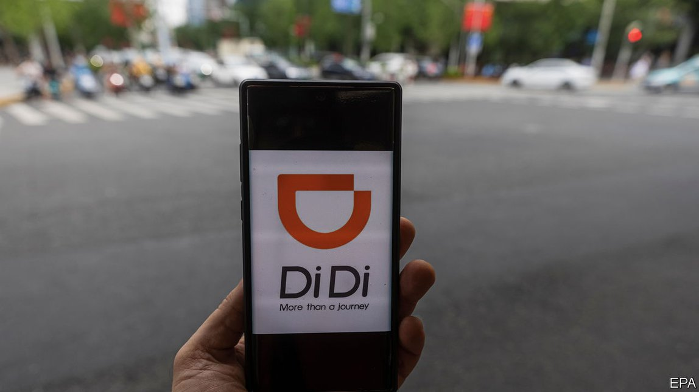
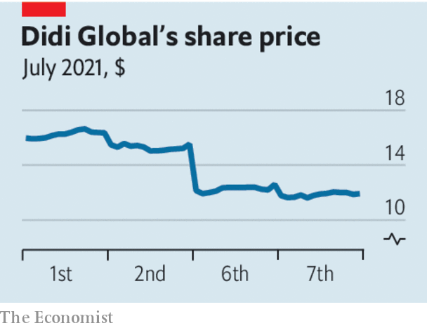
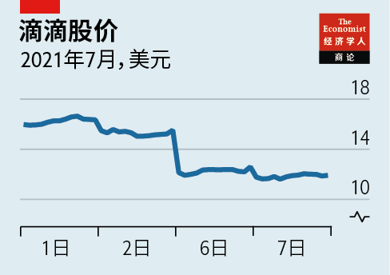

2021-07-18T15:44:59+00:00
Hit and run
【首文】打击并接管
【首文】打擊並接管
China’s communists take control of tech
中共控制科技业
中共控制科技業
The attack on Didi shows how high a price the Communist Party puts on control
对滴滴挥出重拳显示党不惜代价加强管控
對滴滴揮出重拳顯示黨不惜代價加強管控
ONE INTRIGUING question about China is whether it can combine thuggish, autocratic politics with the predictable rules and property rights that entrepreneurs and capital markets need to thrive. The government’s recent attack on Didi Global, a Chinese ride-hailing firm that has just listed its shares in New York, suggests not. It is a warning to investors around the world—and to anyone hoping to make their fortune by setting up in China.
关于中国有一个耐人寻味的问题，就是它能否把粗暴威权的政治制度与企业家及资本市场蓬勃发展所需的可预测的规则和产权结合起来。刚在纽约上市的中国网约车公司滴滴最近遭到政府整顿，表明这个问题的答案是否定的。这向全世界的投资者发出了警示，也对任何想在中国创办企业来赚取财富的人敲响了警钟。
關於中國有一個耐人尋味的問題，就是它能否把粗暴威權的政治制度與企業家及資本市場蓬勃發展所需的可預測的規則和產權結合起來。剛在紐約上市的中國網約車公司滴滴最近遭到政府整頓，表明這個問題的答案是否定的。這向全世界的投資者發出了警示，也對任何想在中國創辦企業來賺取財富的人敲響了警鐘。
Didi is one of China’s superstar firms, with 493m users (more than Uber), 15m drivers and a presence in Brazil and Mexico. It listed its shares on June 30th, raising cash from global investors and valuing the firm at $68bn. Its prospectus contained 60 pages of “risk factors”, including a regulatory crackdown, that most investors snoozed over. But almost immediately one of them turned up.
滴滴是中国的超级明星企业之一，拥有4.93亿用户（多于优步）和1500万名司机，并且已打入巴西和墨西哥市场。6月30日滴滴上市，向全球投资者融资，估值达680亿美元。它的招股书中“风险因素”占了60页，包括监管打击，大多数投资者都没仔细看这部分内容。但就在滴滴上市后，其中一个风险随即显现。
滴滴是中國的超級明星企業之一，擁有4.93億用戶（多於優步）和1500萬名司機，並且已打入巴西和墨西哥市場。6月30日滴滴上市，向全球投資者融資，估值達680億美元。它的招股書中“風險因素”佔了60頁，包括監管打擊，大多數投資者都沒仔細看這部分內容。但就在滴滴上市後，其中一個風險隨即顯現。
It seems that Didi had pursued the listing against the wishes of the Cyberspace Administration of China. On July 4th the regulator struck back, saying that Didi had violated rules on collecting personal data, and banned it from mobile app stores in China. That sent Didi’s share price tumbling by over 20%. Marco Rubio, a hawkish American senator, said that it was “reckless” to allow Didi to float in New York.
看起来滴滴在纽约上市有违国家网信办的意愿。7月4日，该监管机构做出回击，称滴滴违法违规收集个人信息，并通知国内手机应用商店下架“滴滴出行”。这导致滴滴股价暴跌超过20%。美国鹰派参议员马可·鲁比奥（Marco Rubio）说，批准滴滴在纽约上市是“鲁莽”之举。
看起來滴滴在紐約上市有違國家網信辦的意願。7月4日，該監管機構做出回擊，稱滴滴違法違規收集個人信息，並通知國內手機應用商店下架“滴滴出行”。這導致滴滴股價暴跌超過20%。美國鷹派參議員馬可·魯比奧（Marco Rubio）說，批准滴滴在紐約上市是“魯莽”之舉。
China’s tech industry has been one of the most dynamic areas of the global economy in the past decade. Hundreds of large startups have yet to follow giants such as Alibaba, Tencent and Didi by listing their shares. The intersection of e-commerce, payments and “super-apps” means that most daily transactions in China can take place on a smartphone. Global capital and talent have been critical to the industry’s rise. Didi has big foreign shareholders, including SoftBank and Uber, and owns a stake in Grab, a South-East Asian rival. Many of its top brass were educated at Western universities and have worked at American firms. Almost all the largest Chinese tech firms are listed in America or Hong Kong rather than the mainland. They have cosmopolitan executives and benefit from a flow of ideas across borders.
过去十年，中国的科技行业一直是全球经济中最具活力的领域之一。还会有成百上千大型创业公司跟随阿里巴巴、腾讯和滴滴等巨头的步伐公开上市。电子商务、支付和“超级应用”的交汇意味着中国大多数日常交易都可以在智能手机上完成。全球资本和人才对该行业的崛起至关重要。滴滴拥有软银和优步等外资大股东，自己持有东南亚竞争对手Grab的股份。它的许多高管在西方大学接受教育，曾在美国公司工作。几乎所有最大规模的中国科技公司都在美国或香港上市，而不是在中国大陆。它们拥有国际化的高管队伍，并从跨国界的思想流动中受益。
過去十年，中國的科技行業一直是全球經濟中最具活力的領域之一。還會有成百上千大型創業公司跟隨阿里巴巴、騰訊和滴滴等巨頭的步伐公開上市。電子商務、支付和“超級應用”的交匯意味着中國大多數日常交易都可以在智能手機上完成。全球資本和人才對該行業的崛起至關重要。滴滴擁有軟銀和優步等外資大股東，自己持有東南亞競爭對手Grab的股份。它的許多高管在西方大學接受教育，曾在美國公司工作。幾乎所有最大規模的中國科技公司都在美國或香港上市，而不是在中國大陸。它們擁有國際化的高管隊伍，並從跨國界的思想流動中受益。
The crackdown began last year when Chinese regulators cancelled the $300bn flotation of Ant Group in Hong Kong and Shanghai at the last minute. The government went on to threaten other tech firms and to humble tycoons, not least Jack Ma, the co-founder of Alibaba and founder of Ant.
打击行动始于去年，当时中国监管机构在最后一刻叫停了蚂蚁集团在香港和上海估值3000亿美元的上市计划。此后政府继续威吓其他科技公司，驯服科技大亨，尤其是阿里巴巴联合创始人及蚂蚁集团创始人马云。
打擊行動始於去年，當時中國監管機構在最後一刻叫停了螞蟻集團在香港和上海估值3000億美元的上市計劃。此後政府繼續威嚇其他科技公司，馴服科技大亨，尤其是阿里巴巴聯合創始人及螞蟻集團創始人馬雲。
All governments worry about data privacy and monopolies, but China’s interventions signal a systematic attack on tech by the party. On July 7th Bloomberg reported that China might re-examine the use of “variable-interest entities”, a legal structure that underpins almost all foreign investment in Chinese tech. The message is clear: powerful tech firms must defer to the Communist Party, their bosses should keep quiet and foreign owners’ property rights can be violated.
所有政府都担心数据隐私和垄断问题，但中国的干预行动显示中共对科技公司的打击是系统性的。7月7日，彭博社报道中国可能会重新审视对“可变利益实体”的使用，这种法律架构支撑了几乎所有对中国科技业的外国投资。政府传达出的信号很明确：强大的科技公司必须服从党，其老板们应保持低调，外国所有者的产权可能被侵犯。
所有政府都擔心數據隱私和壟斷問題，但中國的干預行動顯示中共對科技公司的打擊是系統性的。7月7日，彭博社報道中國可能會重新審視對“可變利益實體”的使用，這種法律架構支撐了幾乎所有對中國科技業的外國投資。政府傳達出的信號很明確：強大的科技公司必須服從黨，其老闆們應保持低調，外國所有者的產權可能被侵犯。
An optimistic view is that the crackdown is political theatre. Global firms have often been burned in China only to recover. South Korean and Japanese companies have faced boycotts and protests that later faded away. China’s government shuns foreign banks for a while, to punish them for perceived errors, but eventually welcomes them back.
有一种乐观的看法认为，这轮打压只是政治戏码。跨国公司在中国经常受打击，之后总会恢复过来。韩国和日本公司都曾遭遇抵制和抗议，后来也慢慢平息了。中国政府曾把外国银行拒之门外，以违规之名加以惩罚，但最终还是把它们迎了回来。
有一種樂觀的看法認為，這輪打壓只是政治戲碼。跨國公司在中國經常受打擊，之後總會恢復過來。韓國和日本公司都曾遭遇抵制和抗議，後來也慢慢平息了。中國政府曾把外國銀行拒之門外，以違規之名加以懲罰，但最終還是把它們迎了回來。
This time may be different. Foreign investors have lost hundreds of billions of dollars, which may permanently alter the supply of global capital to China. To fill that hole, Chinese firms will depend on less sophisticated mainland markets. Once again entrepreneurs and investors must weigh and reweigh the vast rewards of China’s markets against the risks of its opaque laws, bullying officials and paranoid rulers. If you were risk-hungry, unorthodox and keen to start a business that breaks the mould, would you still choose to do so in China? ■
但这次可能不一样。外国投资者已经损失了数千亿美元，这可能会永久改变全球对中国的资本供应。中国公司将依赖不够成熟的中国大陆市场来填补资金缺口。企业家和投资者这回又得再三权衡利弊：中国市场回报巨大，但法律不透明、官员肆意打压、统治高层偏执多疑。假如你热爱冒险、标新立异，渴望创立一家别具一格的公司，你是否仍会选择在中国这样做？
但這次可能不一樣。外國投資者已經損失了數千億美元，這可能會永久改變全球對中國的資本供應。中國公司將依賴不夠成熟的中國大陸市場來填補資金缺口。企業家和投資者這回又得再三權衡利弊：中國市場回報巨大，但法律不透明、官員肆意打壓、統治高層偏執多疑。假如你熱愛冒險、標新立異，渴望創立一家別具一格的公司，你是否仍會選擇在中國這樣做？